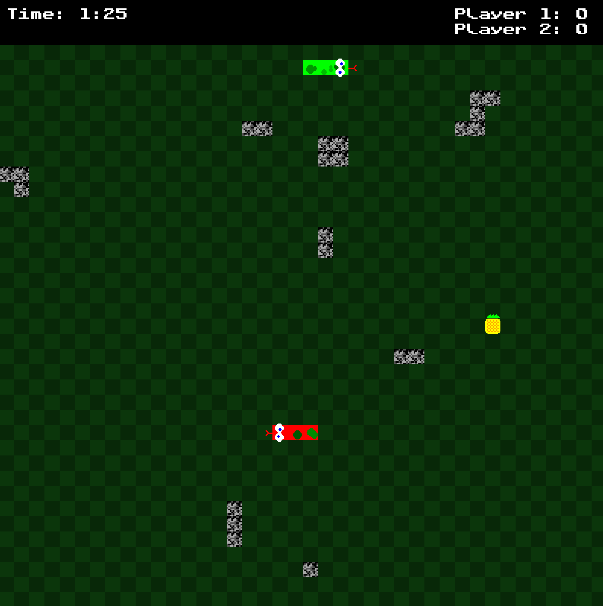
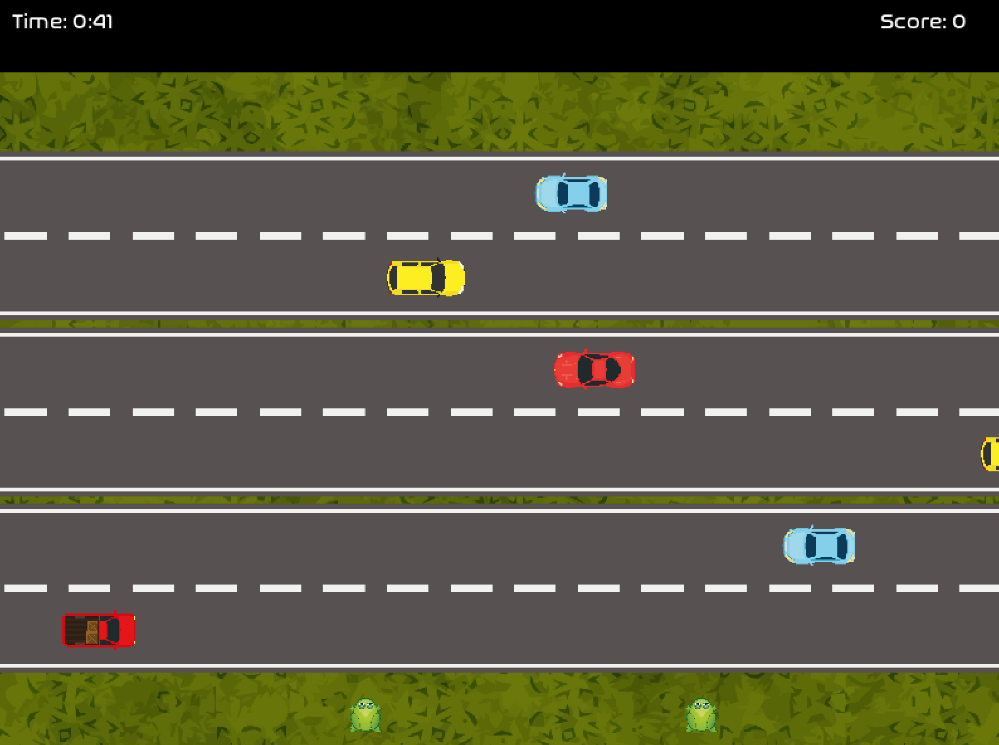

How to Play Overthrone
Game Objective
Overthrone is a board game where players compete to finish the game with the most points. Players move around the board, landing on various spaces that can either help or hinder them, and engage in mini-games for extra points.
Game Rules
- Set the total number of turns for the game.
- Choose between 2-8 players. These can be CPU or human players.
- Pick a game map/table to play on, and create a lobby (public or private).
- Once the game starts, each player rolls a die to determine turn order. The highest roller goes first.

Board Spaces
- "S" Spaces: Safe zones where players cannot be affected by other players' actions.
- "N" Spaces: Reset all players' points to zero.
- "Z" Spaces: Move all players backward a number of spaces, determined by the number rolled on the dice. Only the active player has the effect of the space applied.
- "Choose Path" Spaces: Stop here and choose between the optional paths to proceed down.
- "GP" Spaces: Give points to another player (GP2 = give 2 points).
- "TP" Spaces: Take points from another player (TP2 = take 2 points).
- "+X" Spaces: Add X points to your total.
- "-X" Spaces: Subtract X points from your total.
- "END" Spaces: Go to a random stat point.
Mini-Games
At the end of each round, players compete in a random mini-game. The mini-game winner(s) gain extra points based on their placement.
Snake Game
In the Snake Game mini-game, two players control snakes that compete to eat randomly generated fruits and grow longer. There are three types of fruits—orange, apple, and pineapple—which add length and score when eaten. Players can also eat each other’s segments, transferring the eaten part to the snake that ate it, along with the corresponding score. The game includes randomly generated walls that add a challenge, and hitting a wall causes the other player to win. If a snake collides with the other, the segments that were eaten are added to the winner’s snake, and the loser’s score is reduced. The game ends when one player loses by hitting a wall or when the timer runs out. The winner of the Snake Game gains extra points based on their performance.
Frog Crossing Game
In the Frog Crossing mini-game, players race to cross a busy road filled with randomly generated cars. The game features three roads with six lanes in total, where cars move in opposite directions. Players control their frogs, which can move up, down, or sideways, but not diagonally. The goal is to reach the other side of the road first without being hit by a car. If a frog is hit, the other player wins the round. The game is played in a head-to-head format, where the first frog to cross wins, and the other player earns points based on their placement. Cars move at random speeds, making the game unpredictable and challenging. The winner of the mini-game gains extra points toward the final score.
